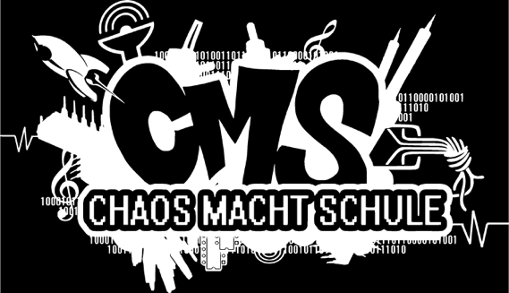

class: center, middle # Chaos macht Schule  ## Henning Brinkmann, 29.10.2018 --- # Vorstellung: Chaos macht Schule - Kreaturen, die sich dem Chaos Computer Club nahe fühlen - Kreaturen, die ihr Wissen zu IT-Themen und Netzpolitik verbreiten wollen an - Schüler - Lehrer - Eltern - Webseite: https://www.ccc.de/schule - Mailinglisten: schule@lists.ccc.de, cms@hamburg.ccc.de - oder den lokalen Erfa (Erfahrungsaustauschkreis)/Chaos-Treff kontaktieren --- # Umfrage - Wer kennt schon Chaos macht Schule? - Wer hat schulpflichtige Kinder? - Wie kommen sie in Kontakt mit IT, Privatsphäre, Datenschutz? - Wie fit sind die Lehrer? - Wie wird der Umgang mit Internet und darauf basierenden Medien im Unterricht behandelt? - Wird das Internet im Unterricht benutzt? - Wie sind die Eltern eingebunden? --- # Wie bin ich dazu gekommen? --- # Veranstaltungen 2018 --- # Bundestreffen in Wien --- # Junghackertag - Lötworkshop - Bausätze - LED-Stern - Pentabug - Blinkenrocket - LED-Klammer - Calliope mini - Vortragsprogramm --- # Mitmachen </body> </html>